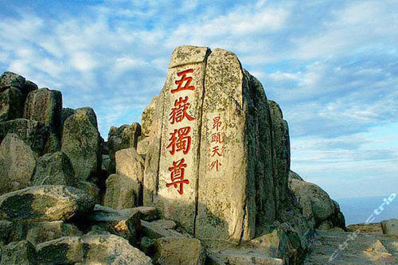
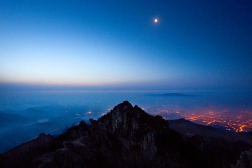
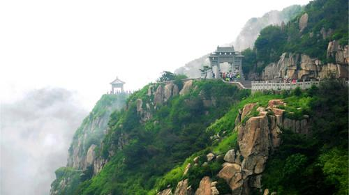
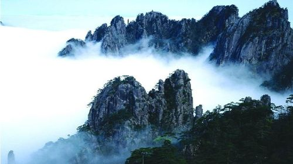
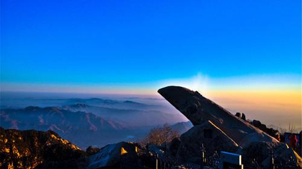

泰山
衡山
恒山
嵩山
华山
泰山简介
泰山，又名岱山、岱宗、岱岳、东岳、泰岳，为中国著名的五岳之一，位于山东省中部，绵亘于泰安、济南、淄博三市之间，总面积2.42万公顷。主峰玉皇顶海拔1545米，气势雄伟磅礴，有“五岳之首”、“五岳之长”、“五岳之尊”、“天下第一山”之称。是世界自然与文化遗产，世界地质公园，国家AAAAA级旅游景区，国家级风景名胜区，全国重点文物保护单位，全国文明风景旅游区。
泰山美图欣赏


造化钟神秀
阴阳割昏晓



为您定制泰山旅游路线
第一条：最经典的红门路徒步中线，其实是中线登封御道,岱庙—红门—岱顶这条古老的传统线路
第二条是坐汽车上山的环山公路线，也可以徒步爬山天外村（天地广场）—环山路—竹林寺—黄溪河水库—中天门—南天门—玉皇顶
第三条是从西北侧山口进,，也可徒步爬山,桃花峪入口—环山公路—彩石溪—赤磷鱼保护区—桃花源索道—南天门—玉皇顶
第四条是东北侧山口方向，一般说是天烛峰，也就是后山。
更多路线请加入泰山旅游官方qq群：6666666